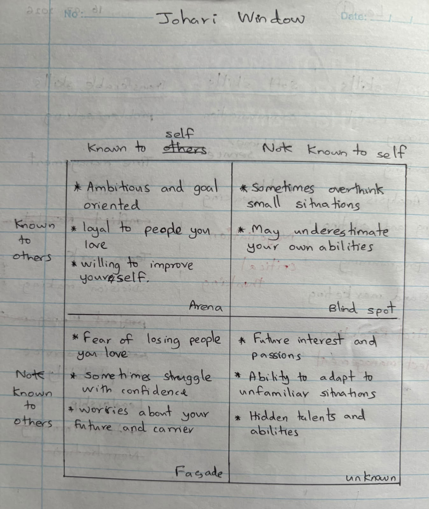
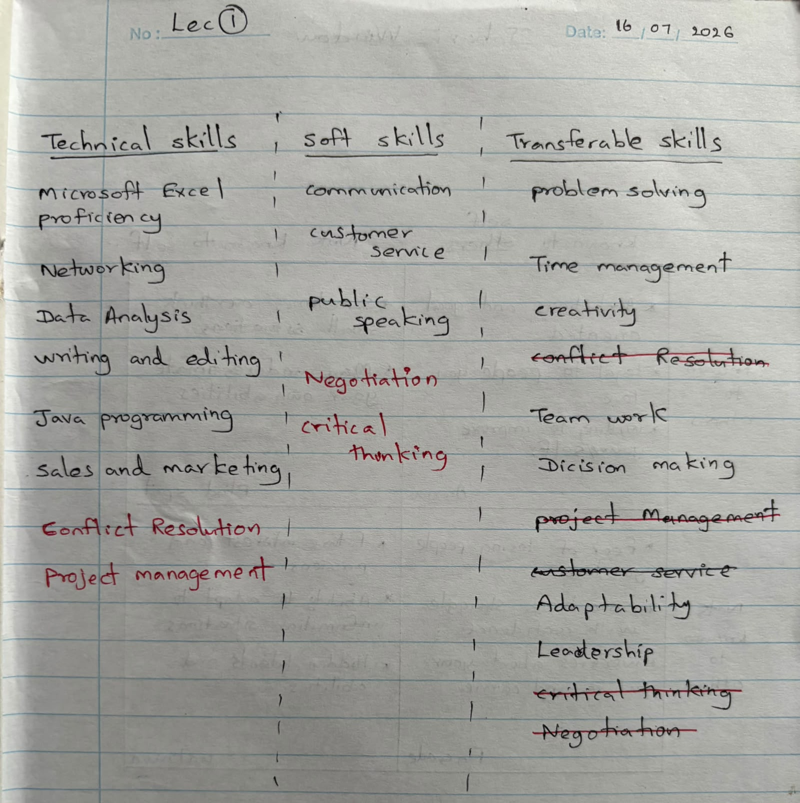

Introduction to Professional Skills
This week focused on understanding the importance of different skills in both academic and professional life. We learned that having knowledge alone is not enough, as the skills we develop also play an important role in our success. The session introduced three main types of skills: technical, soft and transferable skills. We also explored the Johari Window, which helped us understand self-awareness and how others may perceive us.
Key concepts
Technical skills
Specific, teachable abilities tied to a job or tool.
Soft skills
They shape how we work with and relate to other people.
Transferable skills
Useful in almost any role or industry.
The Johari Window
Helps us grow self-awareness through feedback and honesty.
Three types of skills
Technical skills
Measurable abilities that can be learned through study and practice. They are often what gets a candidate noticed.
Soft skills
They decide how well we collaborate, persuade and lead. They are harder to measure, but employers value them highly.
Transferable skills
They travel with us from one job, field or project to the next.
The Johari Window
Developed by Joseph Luft and Harrington Ingham in 1955. The aim is to grow the Open area through feedback and self-disclosure.
Open
What you and others both know about you, your public self.
Blind spot
What others see that you don't. Asking for feedback shrinks it.
Façade
What you know but keep private. Sharing selectively builds trust.
Unknown
Potential neither you nor others have discovered yet, revealed through new experiences.
Photos from the lecture


What I Learned
This week helped me understand that technical knowledge alone is not enough to succeed in my academic and professional life. As a Computer Science student, I realised that communication, teamwork, problem-solving and adaptability are equally important. The Johari Window also helped me reflect on how I see myself and how others may see me. I understood that there may be strengths and weaknesses that I am not fully aware of. Getting honest feedback from classmates and lecturers can help me identify these blind spots and improve myself. Moving forward, I want to develop my soft and transferable skills and turn what I learn throughout this module into skills I can use in real situations.